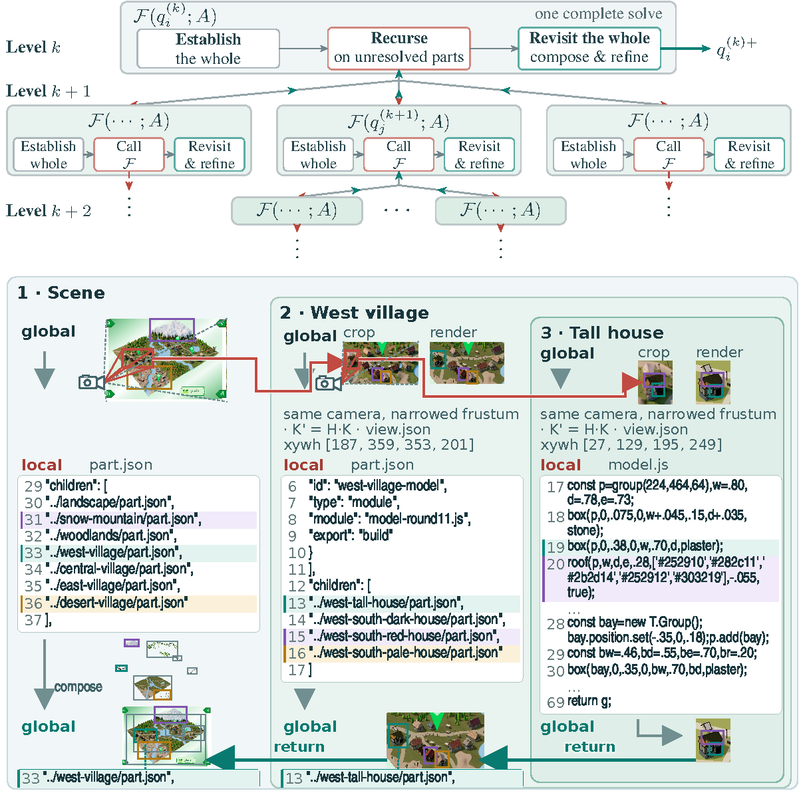

Method
Establish the whole, reconstruct unresolved parts, then revisit their composition.

The solver instruction
Every node follows the same instruction.
Establish the whole, reconstruct unresolved parts, then revisit their composition.

Every node follows the same instruction.